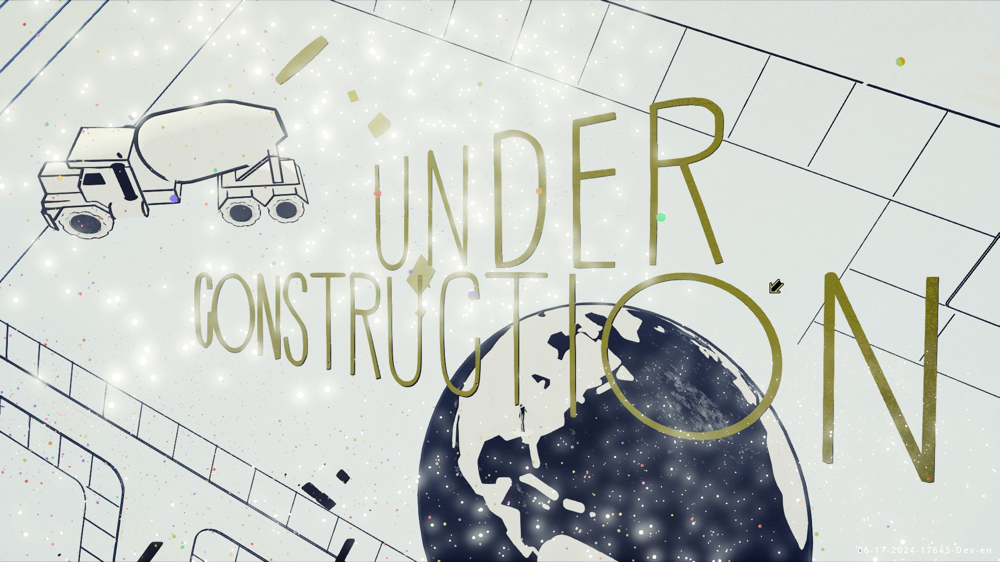
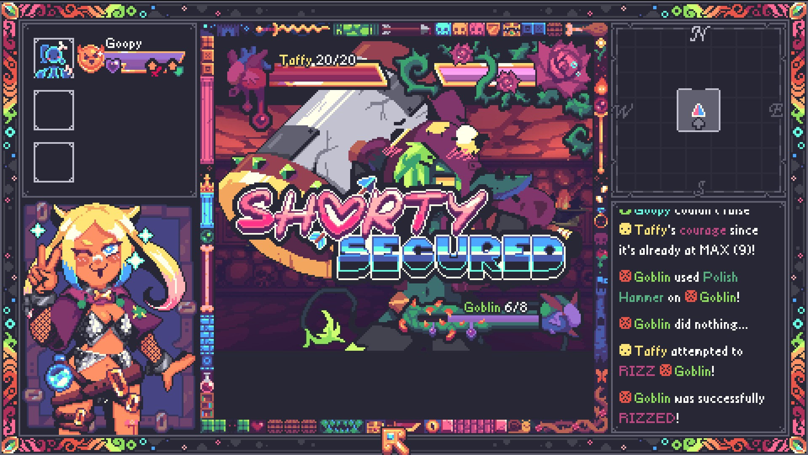
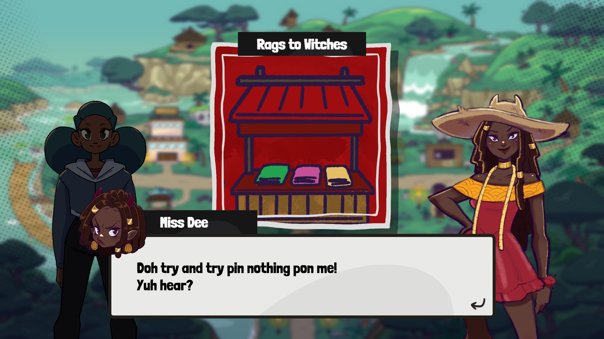
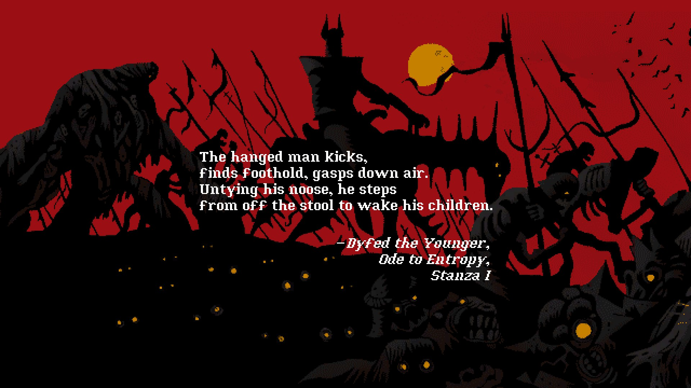
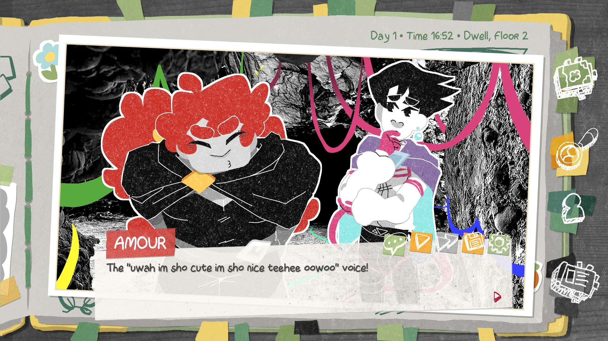

Today's post is a little different. Rather than just reviewing an indie game or a visual novel, this post will be a series of short blurb reviews of every demo I tried during the 2026 Summer Showcases. I'm going to be brief, and maybe harsh in places, but it does not help anyone for me to softball my criticisms of anything. That said, there's a lot to love going around. This is by no means exhaustive; I didn't play demos I thought I would dislike, because that doesn't help anyone, and I won't review games that filtered me before I got to see real, substantial gameplay elements. As always, make sure that if any of these sound interesting to you, that you wishlist them on Steam and support the official release! Regardless of my own opinion, I'm very proud of every dev whose game is listed here for releasing their game to the world! Congrats!
Trading Card Inspector
Trading Card Inspector is a document checker jobsim, similar to Papers, Please, wherein you are working for a corporation at a desk determining the value of trading cards, and shredding invalid cards. The comparison to Papers, Please is not a particularly flattering one, however, because the gameplay was never the game's strong suit. Rather it utilized the mundanity and tedium of bureaucracy to make you sit with what you're doing, causing introspection into the setting and the morality of your actions while you make choices based on that morality. This game has none of that, unfortunately, as the setting and story doesn't take itself seriously at all, leaving me to introspect on... checking cards. It's not particularly fun. Atop this, the game has modifiers to "mix up" this gameplay, which range from interesting to outright frustrating. While playing the story, I was given the opportunity to take an optional "dangerous assignment" with no context, and took it, thinking that this might be where the story could kick in. Instead, I was greeted with the "Earthquake" modifier, which made the game entirely unplayable as it makes everything you have access to bounce around the screen. It's funny, until you're on your 8th card and simply need the day to end, and for it all I received were some jokes about corporations not caring about you. Overall, I think this game was not for me, and it might be for you, but I would struggle to recommend this to most people unless they really, really just like checking documents. 4/10.
33 Immortals
33 Immortals is an astonishingly great game from the team behind Jotun and Spiritfarer. This game is a Hades-like roguelite action hack-and-slash, with the main gimmick being that you play every run with up to 32 other players, most of which will be randoms. The result is an incredibly strong MMO-raid-type atmosphere with an addicting game loop, customization, and high potential for skill expression. The team took extra care to make you want to play with other people, and importantly, it is quite rare that other people can screw you over, which makes being around others only beneficial, especially combined with the Co-Op Spells and Co-Op Combo mechanics, which make everyone stronger together. This is the kind of game that could begin to heal the online multiplayer gaming ecosystem, as it lacks voice comms but still rewards working together. The weapons are all fun to use, the Torture Chamber minigames and Ascension fights are varied enough to keep things interesting, and the boss I fought in the demo was nothing short of breathtaking, and felt like something out of golden era Final Fantasy XIV: A Realm Reborn. If I had any complaints, they would just be that load times can be quite long at times, and that I had a few UI issues with various tutorial pop-ups persisting even into loading zones as well as one of the tutorials in the second set of Trainings being entirely nonfunctional (it's a training about co-op combos, if the devs see this, the enemy didnt move and the tutorial NPC also wouldn't move towards them, so it was unable to be completed). However, these are rather minor criticisms, and I think if you like Hades or raid-heavy MMORPGs, I think you'll have a hell of a time. 8.5/10.
Nirvana Noir
This one I don't have a ton to say about. This is a sequel to Genesis Noir, a game I never played, and is a sort of detective adventure with various minigame-style gameplay elements. There's a lot to take in here that I don't tihnk I appreciated fully. First off, this game is FUCKING GORGEOUS. The demo is split into two prologue chapters, one in the daytime, and one in the night, as No Man tries tries to live a life of freedom while also doing anything he can to fix up his beloved clocktower. The daytime chapter is beyond beautiful, with the splash of colors, the temporary permanence of objects, the transparent ground, and every character just having so much heart. The chapter ends in a confrontation with the butcher, Pork Pi, with the interrogation being a cool Boggle-esque word finding minigame. The whole scene is quite tense, and yet has the lighthearted charm everything else has thanks to the art style. The second chapter is a night-time scene where No Man goes into the club to steal a lightbulb for his clocktower. While less colorful, it was still extremely aesthetically pleasing. The scene showed a fully different, almost ruthless and cunning side to No Man that I wasn't expecting, and perhaps gave some backstory I was missing to the plot that was unfolding before me. I really liked the demo, and it sold me on Genesis Noir itself, because I had no context and I really wanted some. 8/10.

Just a Shadow Game
This one I was not as much of a fan of. This is a hybrid between a roguelite deckbuilder, a tower defense game, and an autobattler, and unfortunately for me hit a lot of the downsides of each. The tutorial was slow and also not super helpful with the questions I had, the towers had solid tooltips that simply didn't help understand the purpose, and the summoned units doing autobattle felt ineffectual until I won out of what felt like nowhere. The card picking is nothing new or fresh, but it doesn't have to be, except because of how summoning towers works (you've basically got a little guy going around your offering determining the timing at which towers activate, like a clock), it's hard to really have any idea how effective anything you're picking is until you've already picked it. Aesthetically, this game reminds me of Night of the Full Moon, which I have found is entirely coincidental, and is not really a downside because I think that game's really pretty. The only aesthetic complaint is that sometimes it gets hard to tell what's going on, but that's a complaint that can be levied across the entire tower defense genre. Overall, you might be into this more than I am, but I'm not into deckbuilders and mostly gave this a try based on the tower defense elements, which I found lacking. Give it a try! 5/10.
Model Kit Studio
This isn't exactly my idea of fun, but I've never built models so I wanted to try it. It was relaxing and enjoyable, with a calm (but repetitive) lofi loop in the background. You build models, taking them off of the runners, snipping off the nubbins (sorry IDK the name), and then painting and assembling the pieces. The sound design is spectacular, and makes every part of the process feel really satisfying with each click and pop. Assembling kits is easy as long as you can follow instructions, thanks to parts being functionally magnetic to where they should fit. There's a big apartment to look around and place your models, and a photo room to take photos, but neither feature is fully implemented in the playtest at the time of writing. Apparently this is meant to have a story as well, but I don't know if the people buying this are really going to be in it for the story. My only real complaint is that painting is imprecise and frustrating in a lot of ways, and if they fix that, this could be a hit. I could see a world where, down the line, this developer gets a partnership with a major modelmaker, and this game immediately begins printing money. 7.5/10.
ARTIUS: Pure Imagination
This game is a charming Sonic/Pizza Tower-esque speed platformer. You have four characters you can swap between with different strengths and capabilities. The game feels good when it feels good and you're going fast, but when it doesn't, it feels like the jankier aspects of Sonic 2. Loops turning the screen is genuinely nausea-inducing at times, and occasionally I had issues where intended jumps and such would just miss the mark. Hitting enemies ranges from satisfying to frustrating. The biggest flaw, though, was that during the stage in Duck Lake, during a forced René section, I immediately upwarped several hundred feet into the air, and upon exploring around, fell off the side of the stage. Needs a little more polish and bugtesting, but I think this could be a fine game for fans of the aforementioned games. 6/10.
Paperhead
An incredible aesthetically pleasing boomer shooter from a small studio. It's competent and difficult for someone who isn't very good at boomer shooters. This is more of the Quake-style than Doom-style, which means you've got spectacular movement that can be little bit tricky to control at times. I often found myself flying off in directions I didn't want to and taking damage as a result, so the room for skill expression seems quite high. Enemies are threatening but difficult to differentiate at a glance. Sound design is great, which is important for a boomer shooter as sound effects are main form of feedback a player receives. Guns feel good to use, the bombs are a little tricky to get a handle on, and erasing corpses to heal is legitimately enjoyable, even if it's just effectively a button to pick up a healing consumable. Levels seem quite long and checkpoints are limited, so if you're not good (I'm not) expect to restart from the same spot over and over. The music was subdued, which is a little disappointing because a more pronounced action theme would be very welcome. Overall, try it out if you like boomer shooters. 7/10.
Burn-9
This one's a really, really cool visual novel from the team behind Yolk Heroes. It's Metal Gear Solid, except you're the guy in the chair. A mission to grab a military MacGuffin goes sideways, and your job is to keep assets alive and get as much intel as you can in the process. You make different strategic options on where to scan, where to send your soldier, and what choices to make in difficult situations, and none of them really felt superfluous. The choices didn't always feel super important, and there were occasionally some spots where continuity got tricky with dialogue (Dodo gets confused where you were at, despite knowing before a call with the higher-ups that you were taking said call), but the writing is solid otherwise. I enjoyed the little snippet of the adventure, and I'm excited to see if, similar to something like Scarlet Hollow, the choices you make in terms of specializations and strategy actually matter. 8/10.
Rizz Dungeon: Skeleton Key to my Heart
This is a blobber/creature collector hybrid from the team behind Turnip Boy Commits Tax Evasion. That game was incredible, and shocking absolutely nobody, this game? Also incredible. Visually this is beautiful, finding exactly the line before reaching "rainbow vomit" while being colorful and exciting to look at. Every monster girl's design was great, Taffy (the main character) had a very genre-conscious design and vibrant expressions. The gameplay between rizz and fighting shows this game's Shin Megami Tensei inspirations clearly, and the flirt minigame is unobtrusive and easy enough that it won't get annoying after doing it repeatedly. My only complaint is that post-flirting, each party member has their action, and there's a long delay between each of them, making that portion of encounters take quite some time for what is frequently no gameplay difference and the same text. The dungeon design is standard and doesn't include anything off-putting nor unique. I had a singular bug, which was a consistent crash when trying to do a sleepover with a Skeleton, but since sleepovers seemed like an optional mechanic in the demo, I'm not too worried about it. Overall, this one's great, and one to definitely watch out for. Wishlist it, please. 8.5/10.

The Telwynium: Book One
The Telwynium is a series of Sierra On-Line-style point and click adventure games by Powerhoof, the developer of The Drifter and Crawl. As with those games, the pixel art in this game is phenomenal, and you can tell they've put their expertise to use as pixel-hunting in this game is at a minimum and most important objects are clearly displayed. I struggled with one point near the end of the Book One demo, but otherwise, things just made sense. However, I did say this was a series, and that's the truth; the first three books are currently free on Powerhoof's itch.io page, with the whole series being bundled for Steam when Book Four is released. The music is very nostalgic, the monitor options are quite robust and there's even actual CRT support. Overall, I think this one was quite charming, and I'll be grabbing the bundle once it's all out in 2027. 7.5/10.
Am I Nima
Am I Nima is a puzzle psychological horror game with some unique gameplay. Essentially, you are inhabiting the mind of Nima, the daughter of a biologist, and have awoken from head trauma with some level of amnesia. You have to look at objects to gather the words for them in your mindspace, and combine them using a cleverly-designed brain container to form word associations to create new words. This will be important, as your mother will be testing you to ensure you are actually Nima. Your goal is to persuade your mother into believing you are Nima, by making associations the way she would, avoiding upsetting your mother, and upon failure, starting all over again from square one. It's horrific, beautiful, and stress-incuding. I didn't play too much of this because I spent all my time making word associations in my room and learning bigger and more important words, and then immediately failed my first test. It's great, and I think there's a lot here just in the word associations that tell a story to be decyphered. This one is absolutely one to look out for when it releases in October. 9/10.
Duppy Detective Tashia
Duppy Detective Tashia is a cute Jamaican indie social deduction game-style visual novel, somewhat similar to Gnosia. Tashia, our protagonist, is stolen from and dies while chasing the culprit, going to the Halfway Market in the afterlife. The cast of characters in the Market is small but charming, based on Jamaican duppies. The plot of the game revolves around finding the murderer of Bredda Anansi, with a social deduction game-inspired plot structure wherein Tashia investigates characters and locations, finds clues, and then at the end of each night the Archangel Michael decides whom to banish based on her accusation. It has a lot of charm, and while it lacks the mechanical depth of Gnosia, the story has a much cozier vibe and could sit better with people not ready for the intensity of its contemporary. The artwork is cartoonish and stylized, Tashia's expressions are exaggerated and clear, and the whole world bobs to the beat of the comfiest background music I've heard this whole fest. The only real complaint I could weight is that often the dialogue is missing punctuation, and that alongside the written Jamaican affect it can make reading somewhat difficult sometimes. This is solved entirely if the dev springs for voice acting or some sort of in-game dictionary. This one's already out, so I'd suggest if this sounds like it's up your alley, give it a try! 7/10.

Apathema
This demo was for a Kings Field-style turn-based first-person dungeon crawler from a small developer. I was excited for this one, and unfortunately was let down. This game is edgy intentionally, which is fine, but the dialogue is riddled with grammatical/usage errors (especially the flipped usage of "its" and "it's") which makes taking the text seriously difficult. The controls are clunky, and because you are downwarped whenever you fall, it can make traversing areas annoying. Repeated trips to old areas along thin pathways makes this game feel devoid of any real exploration, and the overworld movement is the best part. The combat is slow and clunky, hitting parts of enemies ranges from completely useless to overpowered, and combats take forever, even for the most basic enemies. Dodge timing and parry timing is quite strict and beyond punishing upon failure. I experienced a few bugs including being downwarped through the ground, having turns taken away by spells I didn't get to cast, and more. I think this one needs to go back in the oven a bit, and take some hints from more successful, similar games such as Psychopomp Gold. Despite how nice the vibes are, I simply can't recommend it in its current state. 3/10.
Prison of Husks
This is an indie soulslike from a small indie studio, Glass Head Dolls. I didn't spend a super long with this one. The controls for this game felt clunky and unrefined, accurate to the aesthetic era they were going for, but we've improved gameplay since then. This feels like an early PS2 game in every way, from janky collision, to strange button mapping, to lack of real settings for things like audio. The opening area not allowing you to fight enemies at all felt pretty bad while battling the camera and movement controls to find the intended area. Combat feels slow and unrewarding, which is fine, but since parrying drains so much stamina, you never really get to benefit from it, and the dodge button is generally ineffective. I think with some more development time this one could be really fun as a time capsule, but without major improvements I can't suggest this to anyone for anything other than aesthetic appeal. 4/10.
Virtue and a Sledgehammer
Virtue and a Sledgehammer is an introspective walking simulator from Deconstructeam, the devs of Gods Will Be Watching, and Selkie Harbour, the co-devs (with the former) for Many Nights a Whisper. This is a pretty cerebral game, where you walk through your hometown inhabited by humanoid machines that seem as though they're humans uploaded to a virtual reality, smashing everything in your path in a fit of rage. The game poses a lot of philosophical questions and I'm unsure if the answers to them affect anything or are just for introspection, but the themes included are pretty heavy. There are questions about parenthood, how to deal with grief, and whether violence can solve problems. The environment is mostly destructible, in a very satisfying manner thanks to great breakthrough support and fantastic sound design. The soundtrack is anything but subdued, giving a great engine to the unstoppable train that is the narrative. This game is beautiful, and utilizes the late-PS2 polygonal graphics style well. As you wander, you find and smash pieces of memory, which add more to the story and pose more questions as you find them. There are a lot of questions to be answered, and I'm definitely going to be finding them when this releases later this year. Try this one out, you won't regret it. 8/10.
Petal Runner
Petal Runner is a exploration-based adventure game from a new indie studio in which you play as a kid doing deliveries of a Digimon-adjacent digital pet to families for the corporation that makes them. The game is aesthetically very pretty, with a GameBoy Color-style palette and spritework architecture that would feel right at home on the handheld that inspired them. The characters are cute, the UI has a lot of charm and works quite well, and the biking is the smoothest I've ever experienced in any game of its kind. The demo writing got a little grating with how often it asked me to wishlist the game, but I can't fault the devs for asking, as that's how you make your dream come true. The main gameplay is between fetch quests and Calibrating the HanaPets, which essentially is an endurance round of WarioWare minigames. I didn't get a great taste of the story, but if it remains primarily driven by interactions between core characters like its 90s anime inspirations, rather than an overarching plot, I think this will end up incredible. 7/10.
Kernel Hearts
Kernel Hearts is a magical girl-themed 3D Hades-like, and if that seems like a weird combination, that's because it is. You play as a magical girl robot with persistent memory sent to go free the souls of other magical girls from a tower. You are expected to run, die, and run again, as this is a roguelite played in a similar manner to something like Genshin Impact plus Devil May Cry. It's sick, and I really enjoyed my time, although I feel some core mechanics were overexplained in tutorial while others were not explained as effectively. The game's lighting is pretty, and while character design simplicity doesn't quite fit with the very detailed backgrounds, it all works together as a cohesive whole. The music is solid, but unobtrusive, and sound design is what I expect from a game like this. The real all-star, however, is the UI, which is both effective and breathtaking, a real masterclass in immersive roguelite user experience. This game seems balanced around multiplayer, however, so I struggled with difficulty quite a bit. I think if you have a squad of friends, you'll have a great time. If you don't, you still might enjoy yourself. 7/10.
Entropy
Entropy is a grimdark turn-based RPG from the team behind Dread Delusion, Lovely Hellplace. This game hits you immediately with its striking theme, beautiful PS2-era polygon aesthetic style, and well-crafted characters. The game starts with a character creation, wherein you, as a performer, perform a play drunkenly before a demon attack. Nothing new, but effective setup. Mechanically, this game plays close to its tabletop RPG inspirations (of which I can definitely feel Mörk Borg, but others as well), with a 2-row grid party system, recruitable mercenaries, open dice rolls, and more. Recruiting party members makes you more powerful, yes, but in old school TTRPG fashion, you'll need to pay them, taking a cut of every battle's reward, making the tradeoff one you need to keep in mind. The story and writing is nothing short of fantastic, and feels like the writer really had a love for the games this is a love letter to. Multiple dithering styles and beautiful pixel art portraits and texturing means this game can work aesthetically for most people, and if you give it the time, you'll see why I fell in love with this one. I didn't finish the demo, as it's rather lengthy, but I'm planning on going in for a second hit after all of this. Truly one you can't afford to miss if you love turn-based RPGs with real mechanical substance. 9/10.

Neverway
Neverway is an action RPG/farming simulator/horror game in which... I'm not actually entirely sure what happens. The demo is really confusing in a lot of ways thanks to a timeskip that occurs very early. You go from depressed city girl moving to the country on a farm to "digital hellscape simulation where you are configuring your memories to work better with a sword"? Or something? There are shadow monsters and a lot of relatable dialogue, but the demo lacks any context for me to really latch onto anything. The combat seems like it doesn't want you to do it at all, despite being required. The stamina system is a little clunky, the base movespeed is slow, and yet it works for the setting they've set up in the short demo chapters. The pixel art is great thanks to the pixel artist for Celeste being on the team, and the sound design and music are for the most part pretty fantastic, although sometimes a little offputting. I think when this comes out there'll be a lot to love, but until then, I can't really give this anything higher than an 8/10.
Ithaca
Ithaca is an ecological psychological interactive fiction game in which you are presented with a series of micro-decisions about morality, the world, and your own actions as you drive to Ithaca with a tied up oil executive in your trunk. The gameplay in the demo isn't final, but mostly consists of making calls, exploring the things in your car, and learning about goings-on as the car moves. It's very Disco-adjacent in a charming way, but without the more free-roam exploration. In the demo, manually driving the car is disabled, but having it as an option is intended to serve much the same purpose as the document checking in Papers, Please, as a background action for players while they introspect. The game is intended to speak a lot about global warming, man-made climate change, and direct political action, and will definitely not be for everyone as a result, but I think what it has as a baseline is a solid start. The voice acting is a little rigid in parts, but in a way that feels real, and the sound design is solid. The demo lacks any settings options as it's more of a concept demo for a Kickstarter than anything, and that's fine for me as the most important option in my own gameplay is generally sound settings, and this game lacks music unless you turn it on. I think the idea of raising stats as you drive, working on keeping your secret and exploring what your trip means is a really cool concept, and I can't wait to see where this ends up. 7/10.
Celsius Strays
Celsius Strays is a point-and-click adventure/visual novel game with colony management aspects from the developers behind Brok the InvestiGator. The game is about a rough and tumble gang of anthropomorphic rats trying to make it in a wasteland world, and despite the bleak outlook, this game reads more like a 90s cartoon than a fully-serious apocalypse survival story. The artstyle of the portraits is very clearly inspired by both cultural furry art and those same 90s action cartoons, and the grit pairs well with some of the more comedic writing. The voice acting is mostly done by two people across the cast of the demo, which is impressive with how varied they sound, and while I don't super care for all of it, I think the performance is fine enough. The music is standard and inoffensive, and the sound design is great. At times, the demo is a little handholdy, but the commitment to accessibility is absolutely spectacular to see. Overall, while I had gripes, this is a really well-made project and if you're down for a VN that reads like Loonatics Unleashed, you can't really do better than this. 6/10.
Upheaval
This one is special, it's an interactive fiction game set in a fantasy world in which you do what you find interesting in the limited time you can. There's no set goal, you make your own goals and every playthrough is determined by the outcome of those choices. The music is limited, the sound design is near-nonexistent, but it works just fine. Having bespoke options rather than a text parser is quite helpful for ensuring the player can do things in time, rather than just getting lost, and while the characters aren't the most varied or interesting individually, the writing is proficient and enjoyable. Managing resources, solving problems your own way, and doing what you want are the name of the game, and while it's not for me, Upheaval does it quite well. 6/10.
Patience is a Virtue
Patience is a Virtue is a sidescrolling visual novel-style adventure game from developer teaisfortoby about the experiences of a trans individual who feels uncomfortable and unwelcome. The game opens by telling you that conversing with others is war, and to convince another is to win, and to that affect the game is a game of words. The gameplay is split between sidescrolling exploration of the character's hometown that has changed over time to be unrecognizable to them, and a wordplay minigame in which you select words from what the person you're talking to said in order to craft a response. This minigame is tricky, and doesn't seem to care about grammar as much as you'd think. The theme of discomfort pervades the writing, which is proficient and easy to read. The music is comfortable, and the sound design is mostly fine. I think when this comes out, this will be worth a playthrough, and I'll be doing so myself. 7/10.
Night Shift: 1999
Night Shift: 1999 is a vampire life visual novel in 1-bit style by solo developer Georgina Owassapian. It details the new life of a vampire moving to a new city, and the struggles of finding employment, a home, and food while finding any sense of community. Unfortunately, it falls short in a few ways of that ideal. While the writer clearly has a lot to say about the experience, so much of the writing focus is on the minutae that it comes across as boring. I was pretty far into the demo before I met a single character, my first experience feeding was simple and cast aside despite the buildup as a moment of cautious triumph, and the experiences of getting a home and a job are mostly handwaved. The soundtrack was simplistic to a fault, becoming grating if I needed to pause on any individual scene, and the sound design was mostly bird noises. The art is great, but could be rather painful to the eyes after extended play. Overall, I think the writer could use an editor, and with one, this could result in a very solid story. 5/10.
Truth Scrapper
Truth Scrapper is a visual novel from insertdisc5, the devs behind In Stars and Time. The story revolves around Sosotte, a character with a memory disorder that can only choose to remember certain things every day by putting them in an enchanted scrapbook. The main cast of Sosotte (a gremlin), Amour (he/she, physical comedy strongman), and Betz (he/they, the very formal straightman) works very well together, which each individual interacting with each other in a relatable and realistic manner that effectively characterizes who they are. In the demo, which is a self-contained noncanon story, you are guided by the two of them into the Dwell, a mine of some sort, to investigate your Truth Scrapper colleagues who are being attacked. Mostly, this plot is background for the incredible character interaction taking place, which is to the benefit of the VN as a whole as that's where this really shines. I had high expectations for this one, since I've heard such incredible things about In Stars and Time, and they were surpassed. The music is great, the artstyle is a fantastic mix of edited photography and illustration, and the UI design is masterwork. This game was phenomenal, you cannot afford to miss out on this one, and when it comes out it will be going directly onto my list to individually review. 10/10.

All Our Broken Parts
All Our Broken Parts is a visual novel with medical simulation (?) aspects from a small Chinese development team. The game is about a robot doctor who needs to play by the rules and perform surgery on fellow robots. Aesthetically, this game is in a gorgeous pixel art anime style that I think most visual novel buffs will enjoy, and wears its VA-11 Hall-A inspirations on its sleeve (and in its marketing). The demo has a short procedure that has something to say about corporate capitalism and the destructive application of generative AI, and is emotional enough for me to predict that the full game will be closer to a nakige in tone than its inspiration. Robot surgery portions are easy, tactile, and emotional, as they should be. However, this does not mean it is without its issues. The demo's English translation is rather poor, with mass grammatical errors, missing punctuation, and phrasing that indicates a machine translation through Google Translate or similar services. Additionally, the settings options this game has are quite thin, and the audio slider in specific doesn't work as it likely should. Overall, however, I think with some more time to cook, a human translation team, and some work on the UI/UX, this could be the all-timer that we need. 7/10.
Tavern Talk Stories: Dreamwalker
This one's a fantasy tavern simulation visual novel, extremely inspired by Dungeons & Dragons. It's simple, it has a charming art style and a cute bee, and there's a lot there for fans of this niche. The music is a bit repetitive and I could see it getting irritating after long periods of play. The primary gameplay mode is mixing drinks for patrons, a la VA-11 Hall-A, with a statistics minigame to go along with the D&D theming. Additionally, as you talk to patrons, you'll collect rumors which you can turn into quests for the questboard each day. The UI is well-made and doesn't get in the way of the typical visual novel experience, and mechanically both minigames are proficient. Characters are fun to look at and have solid characterization, but also the demo characters are generic D&D sterotypes in many ways. It's not for me, really, but I think if you simply cannot get enough of your fantasy roleplaying niche, you could find this one quite enjoyable. 6/10.
The Mermaid Mask
This one's a cool followup to a series of point-and-click mystery games by the dev of Crow Country. I've never played or even heard of any of the Detective Grimoire games prior to this, but from what I can tell, these are pretty high quality overall, with the newest being the latest adventure of the main duo. The story revolves around a submarine called the Mortuga where the captain was murdered in a "locked room". There's a lot of assumptions thrown around by the cast that everything is on the up-and-up, which is important for a mystery novel but also adds a bit of naïveté to their characterization which adds a lot of charm. The background music and ambiance are subdued and work quite well for the setup given, and the sound design, while minimal, works without asking too much. Mechanically, you are expected to inspect items' 3D render, like in some of the newest Phoenix Wright titles, but also there are modular statements sections for declaring accusations or hypotheses. Overall, this one does what it does well, even if the vibe is a bit goofier than I like in my whodunnits. 7/10.
Tenebris Somnia
This game is a pixel art survival horror game with professional film quality FMV cutscenes co-directed by Airdorf, of Faith fame. Very little needs to be said about aesthetics, but this game is extremely pretty. The FMVs are well-crafted with practical effects, and the pixel art is creepy. Because the game immediately jumps to FMV with no transition, you're always on the edge of your seat, waiting for the next horrific visage to cross your screen, and the jumpscares the demo does in pixel art are quite potent as well. Musically there is functionally nothing, letting the entire soundscape be dominated by the sound effects, which is a masterful choice in a game with such great sound effects. Mechanically, combat and exploration are just clunky enough to keep the foreboding atmosphere, and make it so you're not just running around beating down every ghoul you encounter and ruining the vibes. The story is basic in the demo, but I don't expect groundbreaking storytelling anyway as that's not the draw to this game. Overall, you should play this demo, and wishlist the game for when it comes out in October 2026. 8/10.
Penguin Colony
Penguin Colony is a narrative, exploration-based walking simulator by ORIGAME DIGITAL which re-imagines H.P. Lovecraft's "At the Mountains of Madness" and other stories from the perspective of colonies of penguins in the Antarcic. While the idea may seem strange, utilizing penguins as a neutral third-party to the horrific goings-on in the frozen wastes is a spectacular choice, given Lovecraft's fascination with the creatures. The game's story features a plot involving Nazi fascist meddling in things they claim to be theirs, but are far beyond their ken, and I can see this game having a lot to say on the topic of imperialism and more. The gameplay is simple: you waddle, slide, and swim around as a penguin, able to swap between penguins as you come across them, with different penguins having different attributes (baby penguins can fit into gaps, larger penguins climb more easily, etc.), and you explore the gameworld looking for fragments of memories of the explorers and pieces of the puzzle of what's going on. Visually the game is spectacular, and uses its geography well along with the lines of the wind to guide the player to the next location without feeling like it's holding your hand. While the visuals are low-poly, it works for the story it's telling, and I can tell that when the more bizarre occurrences begin, they'll fit right into the visual style. You would be a fool to miss out on this one, and I'll be buying it day 1. 10/10.
And that, my friends, is every demo from the showcase that I played this year. Again, congratulations to everyone, and please, please make sure you try out and wishlist games here you find interesting. It helps indie developers a lot. See you next time!